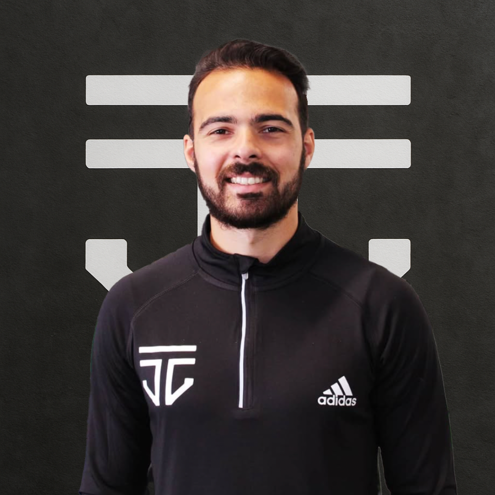
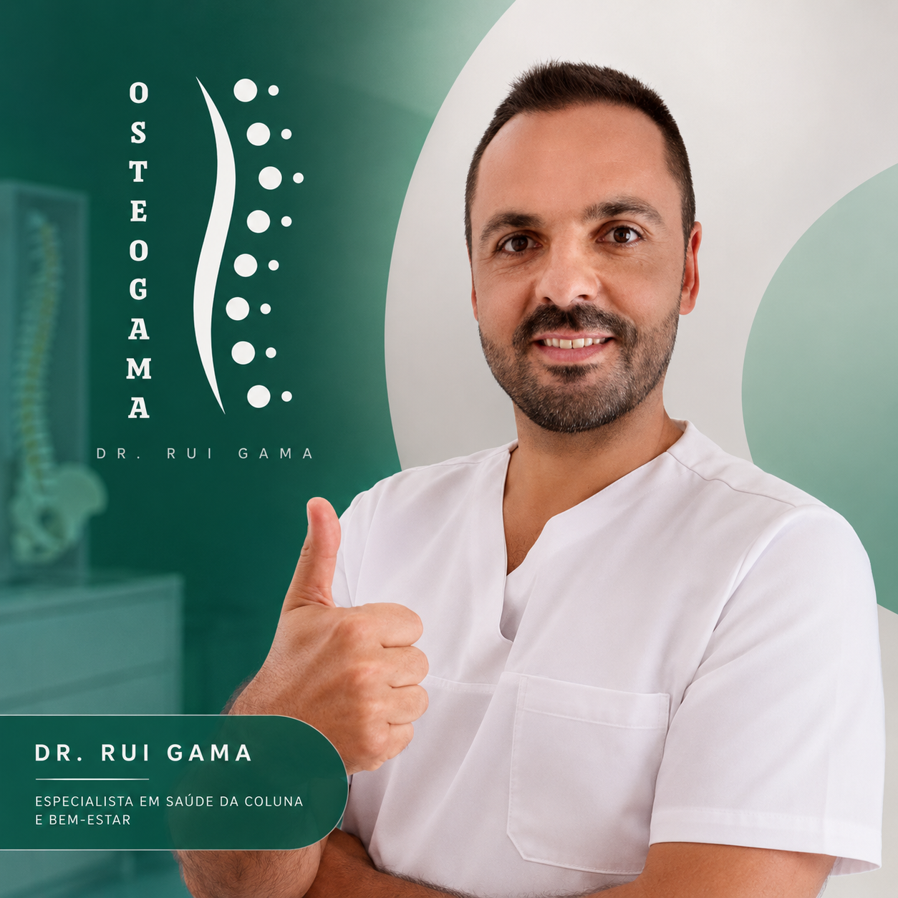

Natação
?
Treinador Principal
A minha equipa
O meu percurso é feito de treino, adaptação, recuperação e evolução. Nada disso acontece sozinho. Esta é a equipa que me acompanha dentro e fora de água.
Trabalho de equipa
A evolução de um atleta depende de muitas áreas: treino técnico, preparação física, recuperação, prevenção de lesões, adaptação e confiança. Cada pessoa da minha equipa tem um papel importante no meu desenvolvimento e na minha qualidade de vida.
Quem me acompanha
Treinador Principal
Treinador Adjunto

Preparador Físico
“A força vai muito além do físico: é adaptação, evolução e qualidade de vida.”

Ex-Treinador e Osteopata
“O Couto tem um síndrome raro, mas isso não o impede de ser um aluno de excelência.”
Áreas de apoio
Planeamento, correção, estratégia e evolução dentro de água.
Força, mobilidade, adaptação e qualidade de movimento.
Apoio, consistência e estabilidade para competir melhor.
Prevenção, tratamento, recuperação e cuidado contínuo.
“O percurso é individual, mas a evolução nunca se faz sozinho.”
Alexandre Couto
A equipa faz parte de cada treino, cada prova e cada resultado. Vê os principais marcos competitivos no palmarés.